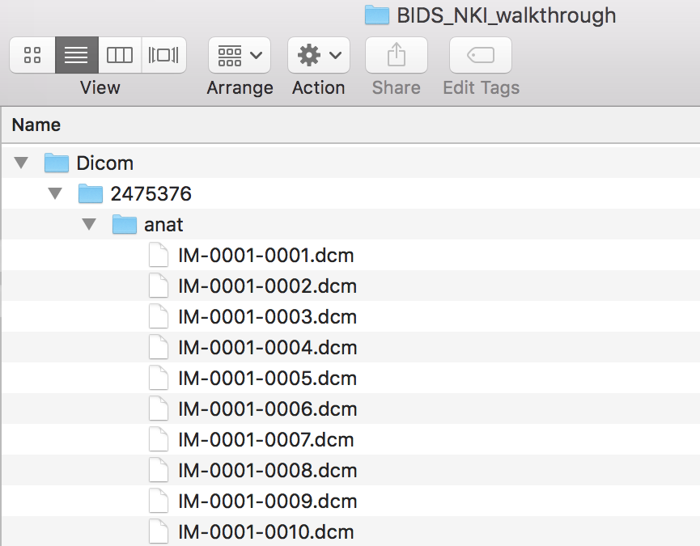
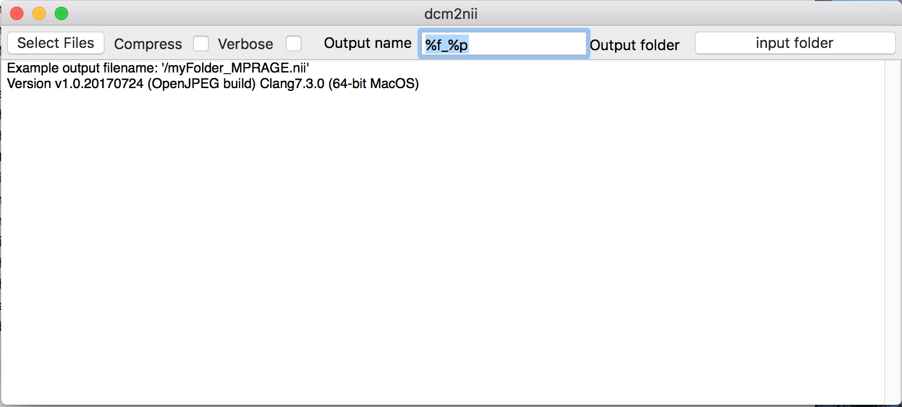
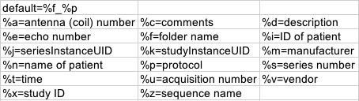
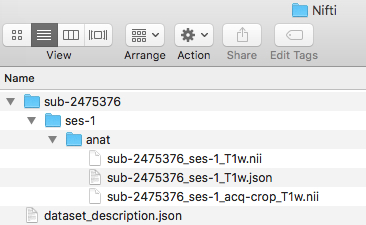
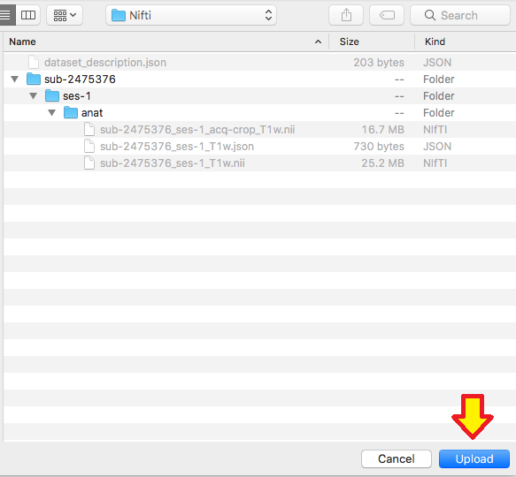

BIDS Tutorial Series: Introductory Walkthrough
Introduction
Welcome to part 1A of the tutorial series “Getting Started with BIDS”. The tutorial series will introduce you to converting brain data into the BIDS organizational standard, provide an example of how to convert a dataset into BIDS (manually and an automated solution), and examine different off-the-shelf automated solutions. This tutorial will show a detailed step-by-step organizational guide to convert DICOMs into a BIDS validated dataset. The step-by-step guide will iteratively add one modality at a time until the full dataset is organized and validated. Even though performing the conversion manually is not expected we show it here for educational purposes. An automated solution is strongly recommended. An automated custom solution is discussed in the next part of the tutorial series. Throughout this tutorial series portion, we will be using DICOMs from the Nathan Kline Institute (NKI) Rockland Sample – Multiband Imaging Test-Retest Pilot Dataset. We will be following the specifications described in the BIDS Specification version 1.0.2. The next parts of this tutorial series will examine an automated custom solution and off-the-shelf solutions to consider using to convert your dataset into the BIDS standard.
For surfacing questions, we please ask if you may direct them to NeuroStars with the “bids” tag. NeuroStars is an active platform with many BIDS experts.
Table of Contents
A. Manual conversion
- Download data
- Folder creation
- Dataset_description file
- Download MRIcroGL
- Create anatomical folders and convert dicoms
- Rename anatomical files
- Organize anatomical files and validate
- Create diffusion folders and convert dicoms
- Rename diffusion files
- Organize diffusion files and validate
- Create functional folders and convert dicoms
- Rename and organize functional files
- Task event tsv files
- Fix errors
- Add participant and check warnings
1A. Manual conversion of DICOM images to BIDS
Step 1. To begin, please navigate to the NKI-RS Multiband Imaging Test-Retest Pilot Dataset and scroll down to the bottom of the page to download the DICOM images for participants 2475376 and 3893245.
Note: If you are having problems downloading this dataset, there is a tutorial illustrating how to download the data and a NeuroStars thread.
Step 2. Once the DICOMs are downloaded, please create a folder with what the dataset is called and create a Dicom directory within this. In this case, our dataset is called BIDS_NKI_walkthrough. Then put the participant folders containing the DICOMs into that folder. The folder structure can be seen below.
Now, create a Nifti folder at the same level as the Dicom folder, pictured below.
Step 3. Then we need to create the dataset_description.json file. There is an online json editor that can help create this file. Once the json file is written, one can save -> save to disk. Then move this file to within the Nifti folder. The dataset_description.json file only needs to be made once. At this time, it is optional to add a participant file, README, or CHANGES. Learn more about json files.
Step 4. Now, please download MRIcroGL. This will allow one to convert the dicom files to nifti and the sidecar json files through a GUI.
At this step, we will be breaking down the process of building the validated BIDS dataset by taking participant 2475376 and iteratively adding a modality once the previous modality has been validated. This means we will first go through the process of validating this dataset using 1 participant with anatomical scans. Next adding in the diffusion scans. Lastly adding in the functional scans.
Step 5. Before converting the anatomical scans, we will be creating the folder structure in the Nifti directory. To do this, we create a sub-2475376 folder. Within that a ses-1 folder and in that an anat folder. This can be visualized below.
To begin conversion, we will take participant 2475376’s anat folder.

To open the converter dcm2nii, please go to the MRIcroGL folder from the download above, click MRIcro, and click Import -> Convert DICOM to NIfTI. Dcm2nii GUI should appear.

Listed below is the default and different options for choosing the Output name. We used the default for this conversion.An example of the of the output filename is shown in the GUI on the first line. In the picture above the example output filename is: ‘/myfolder_MPRAGE.nii’.
The output folder will be the Nifti folder. For input please select the participant directory. One may have to try this process a few times to find the best output name to work with. It is recommended that [participant number]_[protocol] be the output of dcm2nii. The output of performing the dcm2nii conversion are nii and json files. The nii file is the brain image and the sidecar json file stores the metadata to describe the nii file. 
Step 6. Now we are ready to rename the nifti and json file names. The template for naming anatomical images. The not bracketed elements are required and the bracketed elements are optional. (i.e. modality label is required, acq is optional). Note that the nifti and json file have the same filename, the crop does not have a json file because the json file describes this nifii image as well.
Step 7. We are ready to organize the nii and json files into the appropriate folder. In this case, the three files we renamed will be placed in the ses-1/anat folder. One can try to validate the dataset.


 Step 8. We will now be adding in the diffusion scans. The diffusion scans can be found in session 1 and 2 folders marked DTI_mx_137 within the originally downloaded subject folder. We will now take the two diffusion folders, move them into our Dicom folder, and convert the images. For conversion, input the session folder and output the Nifti folder. One will run the converter twice, once for each session folder. This will output the nii, json, bval, and bvec files. In addition, please create a ses-2 folder within the subject folder in the Nifti folder and add a dwi folder to each session.
Step 8. We will now be adding in the diffusion scans. The diffusion scans can be found in session 1 and 2 folders marked DTI_mx_137 within the originally downloaded subject folder. We will now take the two diffusion folders, move them into our Dicom folder, and convert the images. For conversion, input the session folder and output the Nifti folder. One will run the converter twice, once for each session folder. This will output the nii, json, bval, and bvec files. In addition, please create a ses-2 folder within the subject folder in the Nifti folder and add a dwi folder to each session.
Step 9. We are ready to rename the diffusion scans. In this case, there are two diffusion scans, one for each session. Pictured below is the renaming of each session to the BIDS filenames for the nii, json, bval, and bvec. Notice that within the same session number, all the files have the same filename.
Step 10. Now we can organize the diffusion scans into their appropriate session folder and try validating this dataset.
 Step 11. We are ready to add in the functional scans to the Dicom directory. This will be the rest of the folders in the originally downloaded subject. The folders are: TfMRI_breathHold_1400, TfMRI_eyeMovementCalibration_645, TfMRI_eyeMovementCalibration_1400, TfMRI_visualCheckerboard_645, TfMRI_visualCheckerboard_1400, and the three RfMRI folders within the session1 and session2 folders.
Step 11. We are ready to add in the functional scans to the Dicom directory. This will be the rest of the folders in the originally downloaded subject. The folders are: TfMRI_breathHold_1400, TfMRI_eyeMovementCalibration_645, TfMRI_eyeMovementCalibration_1400, TfMRI_visualCheckerboard_645, TfMRI_visualCheckerboard_1400, and the three RfMRI folders within the session1 and session2 folders.
Please convert the functional Dicom folders into the Nifti folder. This will output the nii and json files. In addition, please create func folders within both session folders.
Step 12. Now let’s name the functional filenames. To complete this, one may look back at the NKI webpage and identify the different tasks for the functional images. This will provide a better sense of how to name these files. We see that there are four different tasks: checkerboard, eye movement, breath hold, and rest. We also notice that there are different TR’s for some tasks and the rest tasks have 2 session scans. To break this down, we will go through each task separately.
Let’s begin with the checkerboard task. We notice there are two different TR’s. For TR=645ms, we define this as acq-TR645. Similarly, for TR=1400ms, we define this as acq-TR1400. The acq label was chosen because it is an acquisition difference between the scans. For determining session number, there is not a clear delineation of which session this scan was taken on. Therefore, we defined these scans into session 1, therefore ses-1 will be added as well.
Applying this, we can see how the name will be changed. Both the nii and json will have the same filename (this may be the rule-of-thumb for more beginner users, superusers may reference the Inheritance Principle). Please note the ordering of the filename. This is not optional, the order described in the template has to be followed. (i.e. we could not have switched the placement of acq and task, the validator will fail this)
Proceeding onto renaming the eye movement calibrations. The filename will be similar to the checkerboard naming, with the main difference being the different task label.
Now for the breath hold task. The naming will be similar to the previous tasks, but there is only one TR.
Finally, the rest task. For this task we notice there is 3 different acquisitions (TR=645,1400, and 2500 with differing voxel size and duration). In addition, these are repeated sessions. Therefore, the session identified in the filename will correspond to what ses number to use (i.e. session 2 will be ses-2). The complete filenames are pictured below. Note the CAP image is the TR=2500ms, this can be found on the protocol sheet .
We are ready to organize the files into the appropriate folder. The session 1 tasks will go into the ses-1/func folder and session 2 tasks will go into ses-2/func. The completed structure is pictured below.
Step 13. With the files organized, we will now add the task event .tsv files to describe the task design. For this dataset, there will be five events.tsv files. There is 1 event file for breathhold and 2 for checkerboard and eyemovement (because there are 2 different acq, these event files will have the same content, but different filenames). Rest will not have an events.tsv file. If the events are consistent across the subjects, one can put the events file on the level where the dataset_description.json and subject folders are. If the events are different for each subject, then a sub-# and ses-# needs to precede task-<TakeName>_acq-TR#_events.tsv (i.e. sub-2475376_ses-1_task-Checkerboard_acq-TR1400_events.tsv) and placed at the nii and json level. For this case, since the task is consistent across subjects and sessions, we will put it on the dataset_description level. The contents of these files can be determined from looking at the stimulus design files on the NKI website.
Step 14. We will now try and validate this dataset. One will receive 2 errors, pictured below. We will now go through fixing both these errors.
Let’s begin with the defining ‘TaskName’. To do this, we will be editing the functional scan’s json files. There are required fields that need to be present in each func json file. For this dataset, we notice upon opening the json’s that they have defined repetition time and slice timing, but not task name. The task name needs to be the same name given as the task-<TaskName> in the filename. For example sub-2475376_ses-1_task-Checkerboard_acq-TR645_bold ; the json will have “TaskName”: “Checkerboard”, as pictured below.
Once that is complete, we can try validating again and notice that a single error remains (Error 2 from above): SliceTiming cannot be greater than RepetitionTime.
To fix this error, we first need to understand what is causing this error. The source of this error can be traced back to the fact that this is a multiband imaging dataset. The GUI version of dcm2nii is an earlier version that was not able to properly record the slice timings for some multiband imaging files, causing an error in the slice timing. A fix for this error has been developed.
For this particular dataset, there is a corrected time slicing for each of the TR’s.
To correct the slice timing error, one can copy the time slicing found on the github to the slice timing for each of the tasks json files (the files that need to be changed are identified in the error message) Be careful to divide by 1000 because those times are currently in milliseconds not seconds, we need them to be in seconds.
After those numbers have been pasted in. One can run the validator.

Step 15. You have completed manually creating a BIDSified dataset for 1 subject across 2 sessions and 3 modalities! Now try to complete this same process again with participant 3893245. The only difference is that there is no session 1 for the diffusion scan. Pictured below is the structure for participant 3893245.
We find after validating there are 2 warnings (pictured below). The first warning is because there is no ses-1 dwi scan for participant 3893245. The second warning is because the time series length is different between the two subjects. These messages are warnings versus errors, therefore they can be interpreted as something to understand before moving on, but this is not an error and one can move on after understanding the reason for the warning.
Now we will go through this same process again in the next part, but walking through an automated custom solution.
This tutorial illustrated how to manually step-by-step convert DICOMs from the NKI Test-Retest dataset to a validated BIDS dataset. The next tutorial will show how to complete this conversion using an automated custom solution.

{kind=link}
{kind=link}
{kind=link}
{kind=link}
{kind=link}
{kind=link}
{kind=link}
{kind=link}
{kind=link}
{kind=link}
{kind=link}
{kind=link}
{kind=link}
{kind=link}
{kind=link}
{kind=link}
{kind=link}
{kind=link}
{kind=link}
{kind=link}
{kind=link}
{kind=link}
{kind=link}
{kind=link}
{kind=link}
{kind=link}
{kind=link}
{kind=link}
{kind=link}
{kind=link}
{kind=link}
{kind=link}
{kind=link}
{kind=link}
I am trying to access the data advertised at http://reproducibility.stanford.edu/bids-tutorial-series-part-1a/#man1 but receive a message “You have not chosen a tool/resource, or you have chosen a private tool/resource that you do not have permission to access.” when I try to download it.
I have the same problems as Simon Jones. I’m logged in (NITRC), but still received a message ” You have not chosen a tool/resource, or you have chosen a private tool/resource that you do not have permission to access.” Could you please help with issue.
Hello,
Thank you for the comments. To confirm, have you created an account with both NITRC and 1000 Functional Connectomes Project? (http://fcon_1000.projects.nitrc.org/indi/req_access.html) In addition to being signed into NITRC when trying to download?
step 7: “validate” link is dead.
Hi Dianne,
Thank you for pointing out the dead link, I have updated the links.
Thank you,
Franklin
Hi,
There is a typo in the text for the dataset description Json. BidsVersion should be “Bidsversion” otherwise the validator throws up an error. Also, would it be possible to add a tutorial on how to convert the information in the txt files given at the NKI website into .tsv files? I am a total newbie and I have no idea how to do this properly so that my dataset is BIDS-compatible. Thanks!
I am getting this message just after downloading the DICOM image “This tool/resource’s administrator will have to grant you permission to view this page”. What can I do now?
Hi Elian,
Thank you for your message. This is an interesting error, it appears that the spelling (according to the latest stable specification: https://bids-specification.readthedocs.io/en/stable/03-modality-agnostic-files.html#dataset_descriptionjson) is “BIDSVersion”. If this persists, can you please open an issue on our validator – https://github.com/bids-standard/bids-validator/issues. For the txt to tsv conversion, I have listed how I did this in the next tutorial – http://reproducibility.stanford.edu/bids-tutorial-series-part-1b/#auto10. This conversion is specific to this set.
Hi Rishi,
May you please confirm you have created an account with both NITRC and 1000 Functional Connectomes Project? (http://fcon_1000.projects.nitrc.org/indi/req_access.html) In addition to being signed into NITRC when trying to download?
Step 6 the link for “naming anatomical images” is dead
many links are dead
Hi Jing,
thank you for raising this! I have updated the links.
Thank you,
Franklin
Hi,
Thanks for creating this tutorial. I registered for NITRC and requested access to the 1000 Functional Connectomes Project. The FAQ says that the request can take ~1 day to go through. Would it be possible to update the tutorial with a public dataset that can be accessed more easily?
Thank you,
Ryan
PS I think the word “conversation” should be “conversion” throughout the text.
Hi Ryan,
Thanks for the message and suggestion. Unfortunately, we do not have plans to redo this tutorial.
Also, thanks for catching our `conversation` rather than `conversion`. I have updated the text to reflect this.
Thank you,
Franklin
Hello.
Thanks for the tutorial! I have T1 and resting state fmri dataset (just one session) that I am attempting to convert. While my anat folder is a valid data set, I am getting an error the following error on the func folder:
Error 1: [Code 50] TASK_NAME_MUST_DEFINE
Click here for more information about this issue
I renamed the converted files like the following and transferred them inside the func folder but to no avail.
sub-275679_task-rest_bold.nii
sub-275679_task-rest_bold.json
What could be causing this?
Hi Donna,
I apologize for my very delayed reply. If you may you please direct questions over to NeuroStars (https://neurostars.org/tag/bids) with the “bids” tag. That is an active platform for supporting the community adopting BIDS.
Thank you,
Franklin
Hi, all
Thank you for the tutorial! I wonder if I get a longitudinal structral MRI data(and I just have structral MRI data without dwi or fmri data), how should I organized? treat the second longitudinal structral MRI data as another subject? (I have put my second longitudinal structral MRI into ses-2 folder, but got an error)
please give me some advice!
Many thanks!
Best,
Wenjun
Hi, all
I fixed the problem above
Best,
Wenjun